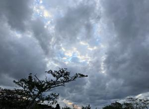
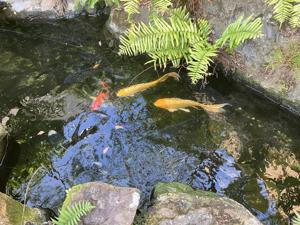

うるがいの話 ある日
最新: 読書感想文【うるがいの話 ある日】とは 一日だけのプログです
『うるがいの話』の最新一日だけのプログで、通信料が少なく経済的だ。カニの画像をクリックすると全ての日付が載る『うるがいの話』サイトを表示します
|
|
【うるがいの話】 うるがい(ｳﾙｶﾞｲ urugai)とは、『もずくがに』の名前でとても大きくなります。 |
|---|---|
|
|
【カミマヤーの話】 猫のことを方言でマヤーといいます。カミマヤー（kamimayaa）とは、神の猫のことです。 |
|
【たながぁの音楽】 たながぁ（ﾀﾅｶﾞｰ tanagaa）とは手長えびのことで、何種類かあり大きいのは車 エビぐらいになります。 |

|
【ぶながぁの話】 ぶながぁ(ﾌﾞﾅｶﾞｰ bunagaa)とは、赤い髪の毛、赤い身体、そして身長は１ｍ２０ｃｍ ぐらい、川の蟹を食べているの目撃された。場所は沖縄県国頭郡大宜味村のと ある村僕の隣近所に住んでいる爺さんから、聞いた話です。 |
|
|
【ギーマの話】 ギーマ(giima)とは、山原の里山に咲くスズランに似た、 花を付けます。実は食べられます、 気が付くと口の周りが紫になっています。 |
2024年12月14日 (土）読書感想文
15:07

『ＲＯＭＥＯ ａｎｄ Ｊｕｌｉｅｔ ロミオとジュリエット』を読み
ました。イントロから、なんなんだこの展開、いきなり決闘か、ありえ
ん！と思いまながらも、最後まで読む。舞台劇だと納得がいく、まるで
沖縄国立劇場で観た「姉妹敵討（しまいてぃちうち）」と似ている。あ
らすじは、単純でヘーこんなもんを？と思うのだが、時が経つにつれあ
じわいがでてくるのである。オリヴィア・ハッセーさん、布施明さん、
だから？。
文系にも読める！宇宙と量子論
量子論が教える宇宙の神秘雑学３分間ビジュアル図解シリーズ図書
竹内 薫∥監修
わたしは理系ですが、無理です。とても、普通の文系の人々には、数ペ
ージで読むのをやめるでしょう。ただし、コンテンツはいいっす。
達磨寺の鯉でもみるか 
寒いー。